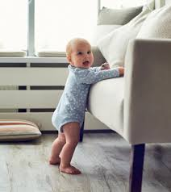
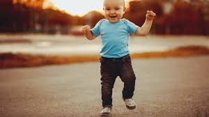

In the first month, when you place your finger on the palm of the baby,
you'll notice that they close their fist around it. In the second month, your baby starts
having a strong sucking reflex. You may notice that your baby likes to suck on a fist or a few fingers.
This is one of the best ways that babies comfort themselves. At this age, the baby doesn't
yet have the coordination to play with toys. But you can notice that the baby can briefly hold
a toy that you place in it's hand. During the fourth month, your baby is becoming more dexterous
and doing more with their hands. Their hands now work together to move a toy or shake a rattle.
They also can kick and push with their feet. Some babies have even figured out how to roll from tummy
to back at this point. They also can kick and push with their feet. Some babies have even figured out how to
roll from tummy to back at this point. Seven-month-olds are learning to get around, although they don’t all do it in the same way. Your baby may creep, scoot, roll, crawl, or combine all four movements.

Your 7-month-old should be strong enough now to hold themselves up on their legs while supported. Practicing this skill will strengthen leg muscles and help them get ready for walking.
Most babies are starting to crawl by now, but don’t be panicked if your 8-month-old isn’t there yet. Some babies take a few extra months to get moving, and a few go straight from
rolling to walking without slowing down to crawl.
A nine month old baby
• Moves from the stomach to a seated position
• Pulls up to a standing position from the floor, using furniture
• Creeps or crawls on the ground
• Some babies may have unique crawling styles, such as scooting with one leg
• Cruises furniture by walking
• Stands up unassisted
• Walking and/or taking steps
• Points or goes for items that they want
• Grabs finger foods and feeding herself
• Babbles
• Imitates words
• Waves “bye-bye”
• Starts to say simple words like “Ma” and “Da”
• Rolls from back-to-front and front-to-back
• Can see colours well now
• Develops specific preferences for tastes and may have favourite and not-so-favourite foods
• Shows curiosity
• Explores how things work
• May express separation anxiety
• Remembers where certain items in the house are—no more tricking them by "hiding" items out of sight
• Plays, such as rolling a ball back and forth
• Loves opening and closing things

At 11 months, your baby should be cruising around while holding onto the furniture or your hands.
They might even let go of your hands to try out a few tentative steps alone or they might even
be walking independently.
Some babies at this age experiment by standing on their toes or on one leg
At 12 months, your baby starts
• Getting into sitting position without help.
• Using support to pull themselves up to stand.
• Walking while holding furniture.
• Walking a few steps without support, which marks the beginning of toddlerhood.
• Using a wide variety of grips such as the pincer grasp, raker grasp and the entire palm to hold objects.
• Poking and pointing with the index finger.
• Having improved vision thanks to better hand-eye coordination and better distance judgment.